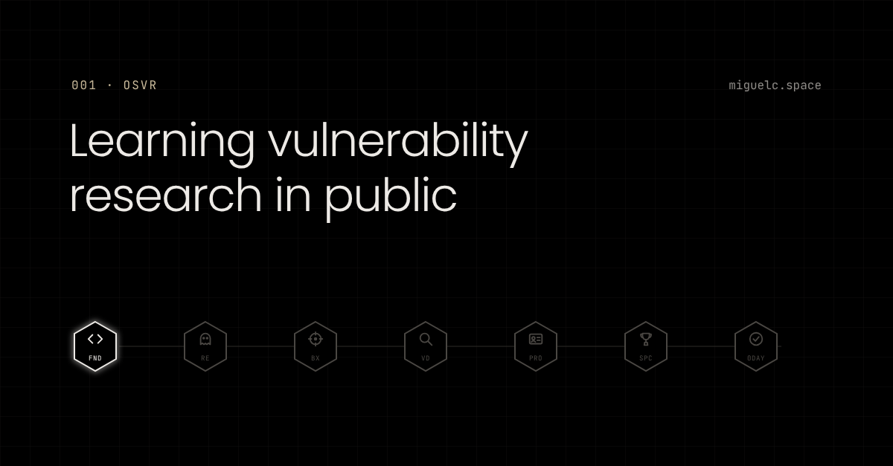

Learning vulnerability research in public
I am a security engineer teaching myself vulnerability research, six hours a week, and logging every step here.

I'm Miguel, a security engineer at LAYER8.
This week I started teaching myself vulnerability research: finding, root-causing and disclosing security bugs nobody has found yet.
The plan
Six hours a week. Monday and Wednesday, three hours each. Seven stages, in order:
- Foundations: C, Linux, assembly, debugging
- Reverse engineering
- Binary exploitation
- Vulnerability discovery: audit, fuzzing, patch diffing
- Disclosure
- One specialisation
- A final project: find, root-cause and disclose a new bug
Each stage ends with a milestone that proves I'm ready for the next. The full plan, with every resource, is on the roadmap, and I tick it off as I go.
Why in public
Writing something down is how I find out whether I actually understand it. And a public log is harder to quit.
What you'll find here
Short write-ups: what I built, what broke, and what I learned from it. If something here is wrong, tell me.